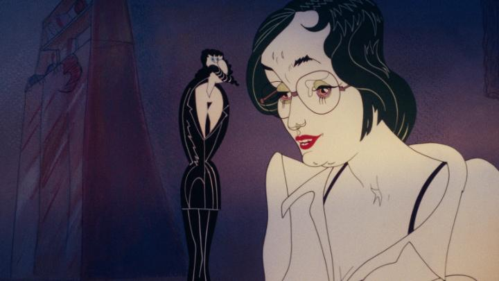

Disclaimer: This is review of the animated feature film "Bubble Bath," also known as "Habburdo"), released either in 1979 or 1980 depending on who you ask (I'll trust the Bluray release's statement of 1979). I watched the retro Hungarian animated film "Bubble Bath" with no information about it going in. And wow, what a trip! It's a bizarre, abstract, experimental satire, and above all, it's a musical to boot! From that sparse introduction, you already know if you'ld love or hate the film. This is a bit too strange to recommend to most people, but it's nothing if not unique. Set mostly within a single apartment, the film revolves around two people. The first is Aniko, a student preparing for her exams to earn the title of dcotor, introduced through her using song and dance to memorize her biology studies, with sexually charged undertones of yearning for a man. Then pops in Zsolt, a Groucho-Marx-like man with a deep Slavic voice. Paralyzed with cramps all over, he's due to be married to a wealthy suitor with an extended family, and begs Aniko, her friend, to call off the marriage for him. And so they discuss the dilemna over the course of the film, often through operatic psychedelic jazz, as to whether Zsolt could go through with the marriage, whether he'd rather marry the medical student in front of him, their respective thoughts on marriage and family as society would expect them both to have, and so on. As the characters sing and dance, they bob and morph into different shapes and designs, like a kalidescope of form. The two lead characters never really have a consistent design, sometimes morphing to extremes that would make Picasso confused. Early on, there are scenes of driving through traffic, and of the camera moving through a living room - clearly, the artists involved didn't have the tecnhical skill to pull this off convincingly, but they tried anyway, further adding to the surreal nature of the movie. Real water effects and photographic backgrounds overlay the drawn characters. It's all utterly wild to watch. I could imagine this being an underground hit with certain audiences in the 70's and 80's, both for the visual imagery and the storyline of fearing marriage and traditional values tying one down. But my goodness, is it ugly. Even at its best, characters look bizarre, and at its worst, characters look utterly hideous, with bulbous chins and eyes and teeth. I'm certain this isn't due to lack of artistic skill - this is just director Gyorgy Kovasznai's chosen style - but it would be a stretch to claim there's any appeal to the designs. Even the choice to have dozens of vastly different renderings of a character was purposeful, but without successful reason. It's fascinating, but not pleasant. It's a little easier to appreciate the cartoonish animation when Zsolt's fiancee finally comes to fetch him, resulting in more physical comedy with a larger cast.  The story is also a bit vague, filling up time with Zsolt making up dozens of excuses as to why he couldn't possibly marry, or at least, not marry his current fiancee. At one point, it appears the director just interviewed several real people on the meaning of family, and animated their poor microphone recordings to fill several minutes. It's part satire of the period's societal expectations, and part riotous farce and comedy of errors. There are some things to chuckle on, especially towards the visual comedy in the seconds half, but those early dialogue-heavy scenes are a bit of a slog. One might get the wrong idea on how "adult" the movie is... there's some brief nudity, but there isn't anything too extreme relative to modern standards. The songs aren't particularly catchy by modern standards either, instead much more like genuine opera that older viewers might appreciate more. The joke is that the songs are mostly about mundane topics... I guess there exist operas and musicals on virtually every subject, so it's not that far out of place. But however grounded or more traditional these songs are musically, this film would rank low against every other animated musical. I suppose the film would be a lot less had it not been a musical at all, and it helps with the "anything goes" mindset of the film's logic. And animated musicals are a high bar... I've certainly seen worse musicals live on stage. Part of me loves "Bubble Bath," purely because of how experimental, and sometimes silly, it is. Nothing about it really works though, at least not in a traditional sense, since so little about the movie is conventional. But if you're terribly bored with your usual set of movies, thinking "everything is the same," you'd be surprised and impressed at the wild abandon taken here in this adult-oriented musical comedy. Throw in the multiple short films included on Deaf Crocodile's Bluray release, and you'll have more than enough advant-garde animation to fill your afternoon.
- "Ani" More reviews can be found at : https://2danicritic.github.io/ Previous review: review_Btooom! Next review: review_Bunuel_in_the_Labyrinth_of_the_Turtles